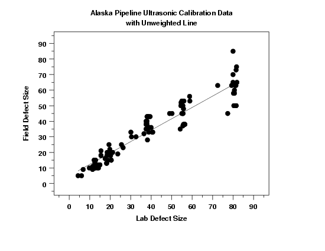
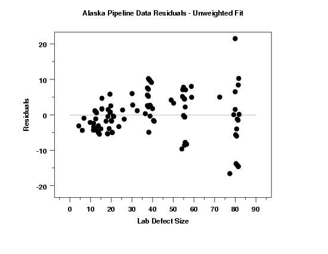

|
4.
Process Modeling
4.6. Case Studies in Process Modeling 4.6.2. Alaska Pipeline
|
|||
| Linear Fit Results |
Based on the initial plot of the data, we first fit a
straight-line model to the data.
Parameter Estimate Stan. Dev t Value B0 4.99368 1.12566 4.44 B1 0.73111 0.02455 29.78 Residual standard deviation = 6.08092 Residual degrees of freedom = 105 Lack-of-fit F statistic = 0.9857 Lack-of-fit critical value, F0.05,76,29 = 1.73The intercept parameter is estimated to be 4.99368 and the slope parameter is estimated to be 0.73111. Both parameters are statistically significant. |
||
| 6-Plot for Model Validation |
When there is a single independent variable, the
6-plot
provides a convenient method for initial model validation.
The basic assumptions for regression models are that the errors are random observations from a normal distribution with mean of zero and constant standard deviation (or variance). The plots on the first row show that the residuals have increasing variance as the value of the independent variable (lab) increases in value. This indicates that the assumption of constant standard deviation, or homogeneity of variances, is violated. In order to see this more clearly, we will generate full- size plots of the predicted values with the data and the residuals against the independent variable. |
||
| Plot of Predicted Values with Original Data |

This plot shows more clearly that the assumption of homogeneous variances for the errors may be violated. |
||
| Plot of Residual Values Against Independent Variable |

This plot also shows more clearly that the assumption of homogeneous variances is violated. This assumption, along with the assumption of constant location, are typically easiest to see on this plot. |
||
| Non-Homogeneous Variances | Because the last plot shows that the variances may differ more that slightly, we will address this issue by transforming the data or using weighted least squares. | ||

{kind=link}
{kind=link}
{kind=link}